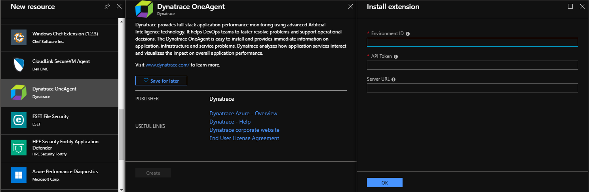
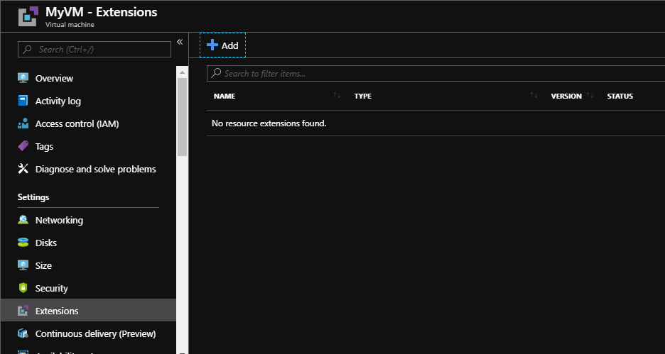
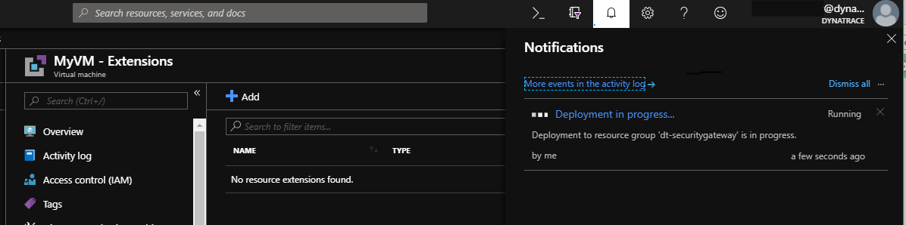
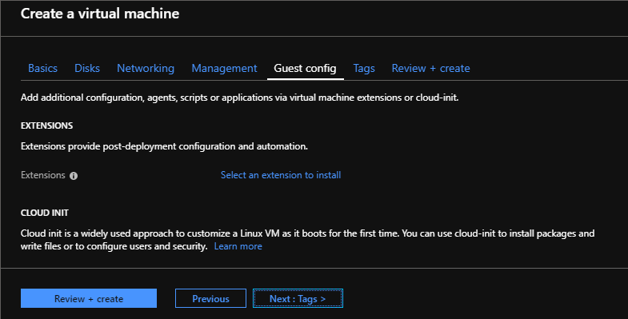
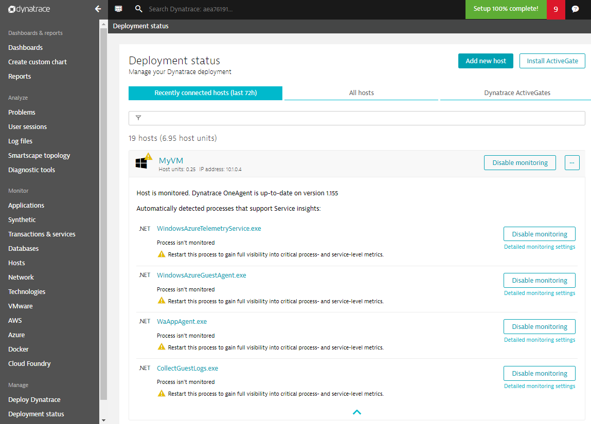

在 Azure 虚拟机上部署 OneAgent
Dynatrace 提供了一个 VM 扩展，用于在 Azure 虚拟机上安装 OneAgent。这允许使用 Azure 资源管理器（ARM）利用本机部署自动化功能。

除了扩展，OneAgent 仍然可以手动安装或使用您选择的任何部署自动化工具。
OneAgent 的 VM 扩展如何工作
该扩展不包括 OneAgent 安装程序。相反，除非配置了 OneAgent 默认版本，否则扩展使用 Dynatrace REST-API 从群集下载最新的安装程序。
Agent 更新是通过 OneAgent 的功能自动提供的。
先决条件
要使用扩展，您需要 Dynatrace 环境ID和 API 令牌。
如何检索环境 ID 和 API 令牌
环境 ID
- 使用您的 Dynatrace 帐户登录。
- 从导航菜单中选择 Deploy Dynatrace。
- 单击“ 设置 PaaS 集成”按钮。您的环境 ID 将显示在“ 环境 ID”文本框中。
- 单击“复制”将 ID 复制到剪贴板。您可以通过重新访问此页面随时执行此操作。
API 令牌
API 令牌与您的环境 ID 结合使用以下载 OneAgent。转到部署 Dynatrace > 设置 PaaS 集成以访问 InstallerDownload 令牌。出于安全原因，建议您为每个环境创建一个离散令牌。
生成新令牌
- 单击“ 生成新令牌”按钮。
- 为您的令牌输入有意义的名称。一个有意义的标记名称可能是你想要监控的平台的名称（例如
azure，cloud-foundry或openshift）。要查看和管理现有令牌，请转到设置 - > 集成 - > 平台即服务。 - 单击“ 生成”以创建令牌。新创建的令牌将显示在下面的列表中。
- 单击“复制”将生成的令牌复制到剪贴板。您可以随时通过重新访问此页面并单击相关 PaaS 令牌旁边的显示令牌来执行此操作。
其他配置参数
服务器 URL
如果您使用的是 Dynatrace Managed，或者您的通信应通过特定的 ActiveGate 进行路由，则需要配置自定义通信端点。
API 端点的 URL 模式如下：
https://<YourDynatraceServerURL>/e/<YourEnvironmentID>/api
<YourDynatraceServerURL>和<YourEnvironmentID>需要更换。
安装
Azure Resource Manager 提供一致的管理层，以通过 Azure PowerShell，Azure CLI，Azure 门户，REST API 和客户端 SDK 执行任务。
Azure 门户
添加到现有虚拟机
-
导航到现有虚拟机
-
选择 Extensions，然后单击 Add。

-
从扩展列表中选择 Dynatrace OneAgent。
-
提供的参数配置要求。
.png)
- 点击“确定”开始安装过程。

在部署向导中定义扩展
创建新虚拟机时，可以在部署向导中配置 VM 扩展。

Azure CLI 2.0
将标有的所有值替换为<...>实际值。
az vm extension set
--publisher dynatrace.ruxit
-n "<Extension-Type>"
-g "<Resource-Group>"
--vm-name "<VM-Name>"
--settings "{\"tenantId\":\"<Environment-ID>\",\"token\":\"<API-Token>\", \"server\":\"<Server-Url>\", \"enableLogAnalytics\":\"yes\", \"hostGroup\":\"<Host-Group>\"}"
注意：在 PowerShell 中使用 Azure CLI 时，必须将设置格式化为 here-string。
--settings @'"{\"tenantId\":\"<Environment-ID>\",\"token\":\"<API-Token>\"}"'@
| 参数 | 需求 | 描述 |
|---|---|---|
| Resource-Group | 是 | 部署虚拟机的资源组的名称。 |
| VM-Name | 是 | 应安装扩展的 VM 的名称。 |
| Extension-Type | 是 | 对于基于 Windows 的虚拟机使用oneAgentWindows。对于基于 Linux 的用途oneAgentLinux。 |
| tenantId | 是 | 按照先决条件中的说明设置环境 ID 。 |
| token | 是 | 按照先决条件中的说明设置 API 令牌。 |
| server | 否 | （可选）提供此属性以配置备用通信端点。有关更多信息，请参阅其他配置参数 |
| enableLogsAnalytics | 否 | 如果未设置，则不启用日志监控。将值设置yes为启用日志监控 |
| hostGroup | 否 | （可选）提供此属性以定义此 VM 所属的主机组。有关更多信息，请参阅主机组。 |
PowerShell
将标有的所有值替换为<...>实际值。
使用 AzureRM
Set-AzureRmVmExtension
-Name Dynatrace
-Publisher dynatrace.ruxit
-ResourceGroupName "<Resource-Group>"
-Location "<Location>"
-VMName "<VM-Name>"
-ExtensionType "<Extension-Type>"
-Settings @{ "tenantId"="<Environment-ID>"; "token"="<API Token>";"server"="<Server-Url>"; "enableLogAnalytics"="yes"; "hostGroup"="<Host-Group>"; }
| 参数 | 需求 | 描述 |
|---|---|---|
| Resource-Group | 是 | 部署虚拟机的资源组的名称。 |
| Location | 是 | VM 部署到的位置。 |
| VM-Name | 是 | 应安装扩展的 VM 的名称。 |
| Extension-Type | 是 | 对于基于 Windows 的虚拟机使用oneAgentWindows。对于基于 Linux 的用途oneAgentLinux。 |
| tenantId | 是 | 按照先决条件中的说明提供环境 ID 。 |
| token | 是 | 按照先决条件中的描述提供 API 令牌。 |
| server | 否 | （可选）提供此属性以配置备用通信端点。有关更多信息，请参阅其他配置参数 |
| enableLogsAnalytics | 否 | 如果未设置，则不启用日志监控。将值设置yes为启用日志监控 |
| hostGroup | 否 | （可选）提供此属性以定义此 VM 所属的主机组。有关更多信息，请参阅主机组。 |
ARM 模板
虚拟机扩展的 JSON 可以嵌套在虚拟机资源中，也可以放置在 Resource Manager JSON 模板的根级或顶级。JSON 的放置会影响资源名称和类型的值。
以下示例假定 OneAgent 扩展嵌套在虚拟机资源中。嵌套扩展资源时，JSON 位于虚拟机的“resources”：[]对象中。
{
"type": "extensions",
"name": "dynatrace",
"apiVersion": "2018-06-01",
"location": "[resourceGroup().location]",
"dependsOn": [
"[concat('Microsoft.Compute/virtualMachines/', <VM-Name>)]"
],
"properties": {
"publisher": "dynatrace.ruxit",
"type": "<Extension-Type>",
"typeHandlerVersion": "<Extension-Version>",
"autoUpgradeMinorVersion": true,
"settings": {
"tenantId": "<Environment-ID>",
"token": "<API-Token>",
"server": "<Server-Url>",
"enableLogAnalytics": "yes",
"hostGroup": "<Host-Group>"
},
}
}
将扩展 JSON 放在模板的根目录时，资源名称包括对父虚拟机的引用，该类型反映嵌套配置。
{
"type": "Microsoft.Compute/virtualMachines/extensions",
"name": "<Parent-VM-Resource>/dynatrace",
"apiVersion": "2018-06-01",
"location": "[resourceGroup().location]",
"dependsOn": [
"[concat('Microsoft.Compute/virtualMachines/', <VM-Name>)]"
],
"properties": {
"publisher": "dynatrace.ruxit",
"type": "<Extension-Type>",
"typeHandlerVersion": "<Extension-Version>",
"autoUpgradeMinorVersion": true,
"settings": {
"tenantId": "<Environment-ID>",
"token": "<API-Token>",
"server": "<Server-Url>",
"enableLogAnalytics": "yes",
"hostGroup": "<Host-Group>"
}
}
}
| 参数 | 需求 | 描述 |
|---|---|---|
| Parent-VM-Resource | 是 | 应安装扩展的父 VM 资源的名称。使用嵌套资源时不适用。 |
| VM-Name | 是 | 应安装扩展的 VM 的名称。 |
| Extension-Type | 是 | 对于基于 Windows 的虚拟机使用oneAgentWindows。对于基于 Linux 的用途oneAgentLinux。 |
| Extension-Version | 是 | 扩展所需的版本。目前的最新版本是：2.3 |
| tenantId | 是 | 按照先决条件中的说明提供环境 ID 。 |
| token | 是 | 按照先决条件中的描述提供 API 令牌 |
| server | 否 | （可选）提供此属性以配置备用 API 端点以下载 OneAgent 安装程序。有关更多信息，请参阅其他配置参数 |
| enableLogsAnalytics | 否 | 如果未设置，则不启用日志监控。将值设置yes为启用日志监控 |
| hostGroup | 否 | （可选）提供此属性以定义此 VM 所属的主机组。有关更多信息，请参阅主机组。 |
安装 OneAgent 后，OneAgent 会立即开始监视您的虚拟机。您可以在 Dynatrace 中检查部署状态。

VM 扩展可用性
- Dynatrace VM 扩展可用于所有公共 Azure 区域中的 Windows 和 Linux（包括对 Classic Virtual Machines 的支持）
- 即将推出：Azure Sovereign Clouds，如Azure Government，Azure China，以及 Azure Stack